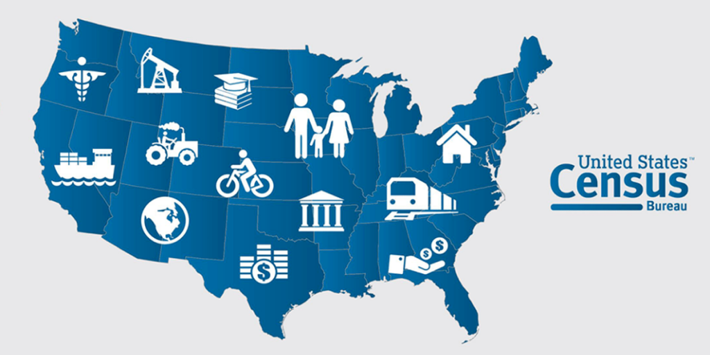

source("scripts/pulse_data_cleaning.R")Data
We describe the sources of our data and the cleaning process. The data and information on the data was found through the census website (www.census.gov)

Overview of Household Pulse Survey Data
This data comes from a partnership between the Census Bureau, the National Center for Health Statistics (NCHS), and other federal agencies. The Household Pulse Survey is a 20-minute online survey published every two weeks, starting on April 23, 2020. The analyzed data set comes from the survey period between August 20 and September 16, 2024, and is available on the Census Bureau website.
Purpose and Design of the Survey
The survey was developed to provide timely and relevant data on the impact of COVID-19 in the United States. While multiple federal agencies contributed to the effort, the Census Bureau led the data collection.
The Household Pulse Survey was specifically designed to collect data representing social and economic issues affecting American households. This data is critical for informing state and federal decisions, particularly during the peak of the pandemic when emergency response efforts were most urgent. Unlike other surveys tracking similar data, the Household Pulse Survey stands out for its frequent data collection and quicker turnaround.
Research and Insights
There have been various research efforts aimed to improve survey effectiveness and understand respondent behavior. For example:
- Survey Response Strategies: Renee Reeves and Kayla Varela conducted research to evaluate the Household Pulse Survey experiments. They analyzed strategies that increased response rates, focusing on contact methods such as text vs. email and URL length. Their findings include:
- Text messages yielded higher response rates compared to emails.
- Shorter URLs containing “census.gov” were more effective than longer URLs.
- Sending texts exclusively, rather than a combination of texts and emails, generated the best responses.
- Text messages yielded higher response rates compared to emails.
- Demographic Analysis: Other research has explored demographics of respondents and nonrespondents, particularly those who selected non-definitive response categories. Studies also examined which demographics were more likely to answer questions related to sexual orientation and gender identity (SOGI).
Potential Issues and Biases
The Household Pulse Survey has several limitations that could impact the data’s accuracy and representativeness:
Voluntary and Self-Reported Date: Responses are voluntary and self-reported, potentially leading to inconsistencies in how respondents interpret scales and questions, particularly on sensitive topics like mental health, where stigmas are present. Additionally, some respondents skip questions, which limits the data’s completeness.
Non-Participation Bias: While participants are randomly selected, those who choose not to participate may differ systematically from respondents. For example, nonparticipants may distrust the government or lack time to fill out the survey, which could correlate with survey variables.
Exclusion of Certain Populations: The survey relies on household addresses, excluding individuals experiencing homelessness, which is an important demographic when considering the impact of COVID-19.
Changes in Question Design: Survey questions have evolved over time, potentially impacting comparability. For instance, mental health questions initially asked about symptoms over a 7-day period but later shifted to a 14-day period in Phase 3.2. This change could lead to different responses, as a longer timeframe may capture more variation in experiences.
Data Files and Variables
The Household Pulse Survey dataset includes a broad range of variables, from veteran status to the impacts of natural disasters. To streamline the analysis and focus on specific areas of interest, we narrowed the scope to the following categories and variables. Variables with significant missing data, such as school type, were excluded.
Basic Descriptive Variables: Birth Year, Hispanic vs. Non-Hispanic, Race, Marital Status, Gender at Birth, Gender Identity, Sexuality, State, Household Income
Education and Employment: Education Level, Employment Status, Job Loss, Kind of Work, Reason Not Working
Active Duty and Veteran Status: Active Duty, Veteran
Mental Health: Anxiousness, Worry, Interest (or lack thereof), Feeling Down, Children’s Mental Health Treatment (Need for treatment, Receiving treatment, Difficulty obtaining treatment, Satisfaction with treatment), Social Support, Loneliness, Public vs. Private Health Care
Overview of Area Health Resource Data
We also compared the Household Pulse Survey to the Area Health Resource Data for 2022-2023 at the State and National Level from the Health Resources & Services Administration (HRSA). The Area Health Resources Files (AHRF) dataset has over 6,000 variables with current and historical data at county, state, and national levels, covering health care professions, facilities, population characteristics, economics, and more. It is designed for planners, policymakers, and researchers, and includes geographic codes for linking with other datasets and aggregating data by region.
There a fewer worries of bias within this data as the numbers are not self reported. Additionally, professionals such as psychologists and social workers must be licensed in their state to practice, meaning the government has access to accurate numbers of professionals in each state. However, the simple numbers of professionals does not provide a full story of access to mental health care in a state. For example, there are questions about how many are private versus work for state institutions, what proportion work in crisis care and how many take different types of insurances. Therefore, these numbers are a good starting point to see access to care across different states, but can not give the full story.
We looked at the number of psychologists, social workers, counselors per state using this dataset.
Cleaning the Data
Household Pulse Survey
The Household Pulse Survey was cleaned using this cleaning script.
The script kept 43 out of the 220 relevant variables (columns) and recoded variable values from “-88” and “-99” to NA and 0. “-88” indicates “Missing / Did not report”, which can be interpreted as NA, and “-99” indicates “Question seen but category not selected”, which was converted to 0. This makes histograms concise (and makes regression easier). Then, columns were renamed to be more intuitive. This was saved as pulse_data. An additional column called region was added, which converted the numerical state value to the full state name.
NA_VALUE <- "-88" # value indicating "Missing / Did not report"
ZERO_VALUE <- -99 # value indicating "Question seen but not selected"
suppressWarnings(suppressMessages({
pulse_data <- read.csv("dataset/data_unclean.csv", na = c(NA_VALUE))
}))
pulse_data[pulse_data == ZERO_VALUE] <- 0
pulse_data <- pulse_data |>
mutate(region = recode(as.character(State_Living_in), !!!state_lookup))Another version of the clean data was created by converting the name of each state to a number, which is better for mapping. This version was saved as data_by_state.
Area Health Resource Data
The Area Health Resource Data was cleaned using this cleaning script. The script filtered the data down to the 5 variables (columns), st_abbrev, psychol_21, socwk_21, conslrs_21, popn_pums_21 and recoded the state abbreviations to the full name of the state in lower case. This data was saved as care_data.
Finally, we will create a joined data set by state, using the region variable.
source("scripts/care_data_cleaning.R")
joint_data <- pulse_data |>
left_join(care_data, by = "region")
write_rds(joint_data, "dataset/joint_data.rds")## Rubric: On this page
# You will
# * Describe where/how to find data.
# * You must include a link to the original data source(s). Make sure to provide attribution to those who collected the data.
# * Why was the data collected/curated? Who put it together? (This is important, if you don't know why it was collected then that might not be a good dataset to look at.
# * Describe the different data files used and what each variable means.
# * If you have many variables then only describe the most relevant ones and summarize the rest.
# * Describe any cleaning you had to do for your data.
# * You *must* include a link to your `load_and_clean_data.R` file.
# * Rrename variables and recode factors to make data more clear.
# * Also, describe any additional R packages you used outside of those covered in class.
# * Describe and show code for how you combined multiple data files and any cleaning that was necessary for that.
# * Some repetition of what you do in your `load_and_clean_data.R` file is fine and encouraged if it helps explain what you did.
# * Organization, clarity, cleanliness of the page
# * Make sure to remove excessive warnings, use clean easy-to-read code (without side scrolling), organize with sections, use bullets and other organization tools, etc.
# * This page should be self-contained.